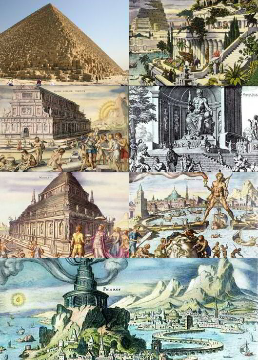

Сім чудес світу— список найпрославленіших пам'яток античної культури часів Ойкумени, з якого до наших часів збереглась лише піраміда Хеопса. Складання списку найславетн іших поетів, філософів, полководців, великих царів, як і пам'яток архітектури і мистецтва — традиційний «малий» жанр грецької елліністичної поезії і свого роду вправа в риториц
